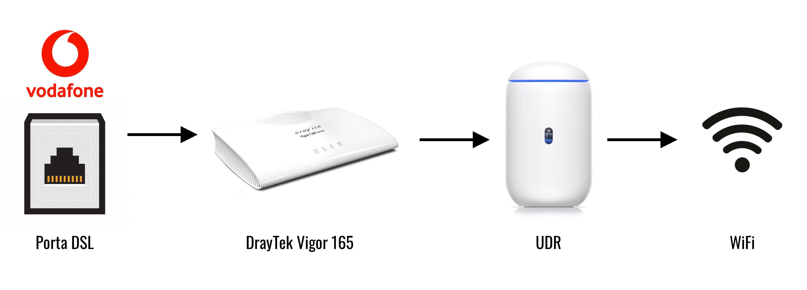
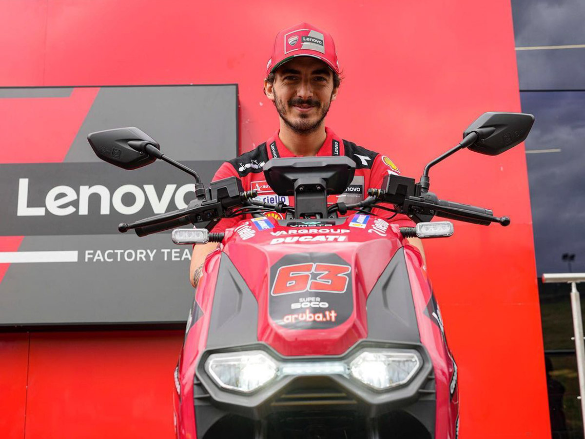
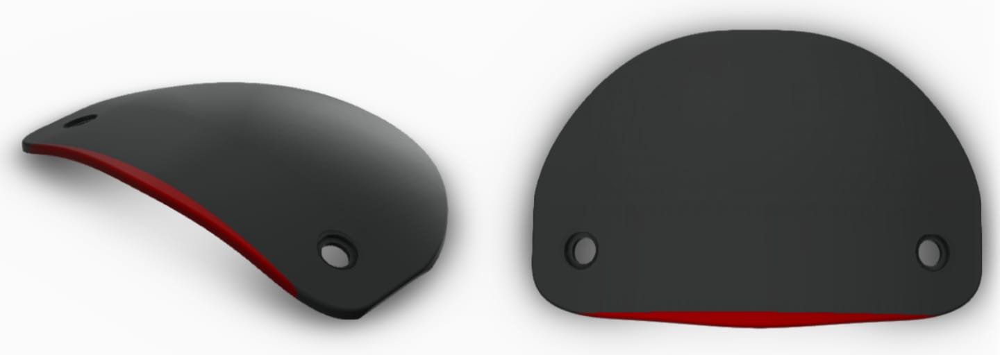
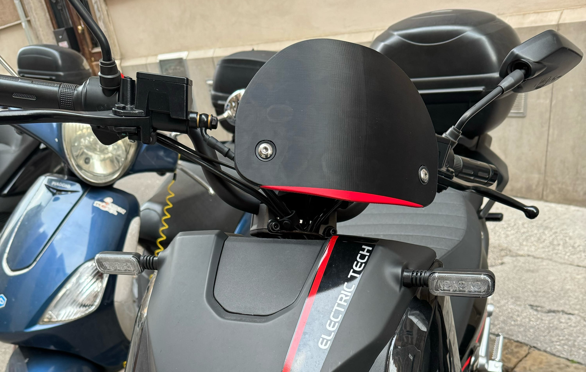

Digital Garden
Questa pagina è un esperimento di "giardino digitale", un luogo dove raccoglierò esperienze, perloppiù digitali, che potrebbero essermi utili in futuro e chissà, forse potrebbero essere utili anche a voi! I post saranno in ordine cronologico (dal più al meno recente) e saranno scritti prevalentemente in inglese. Se più avanti ne sentirò la necessità, metterò dei filtri per poterli smistare per lingua.
This page is an experiment in a "digital garden," a place where I will collect experiences, mostly digital, that might be useful to me in the future and who knows, maybe they might be useful to you! The posts will be in chronological order (from most to least recent) and will be written mostly in English. If I feel the need for it later, I will put filters so that they can be sorted by language.
Sabato, 24 Agosto 2024
Spoiler Alert: la configurazione di Vodafone NON era stabile.
Dopo aver settato la Vodafone station in cascata con l'UDR, e aver disattivato il Wi-Fi sulla Vodafone Station, sembrava che il tutto funzionasse alla grande (come avevo scritto nel precedente post). Purtroppo, dopo un paio di giorni, ho notato che la connessione internet era molto instabile. L'UDR continuava a notificarmi ad intervalli più o meno regolari che a causa della latenza altissima, il servizio internet risultava non essere disponibile. Questa cosa succedeva più volte al giorno, e dopo esser diventata una situazione pressochè insostenibile, ho iniziato a fare delle indagini che hanno subito portato alla luce il problema.
Doppio NAT
Mi ci è voluto poco per capire che il problema era il doppio NAT. Anche se, in teoria, il doppio NAT non dovrebbe causare questo tipo di problemi, era chiaro che mettere il NAT statico sulla Vodafone station era la soluzione sbagliata. Dopo una breve chiacchierata con un altro tecnico Vodafone, che mi ha confermato che il NAT statico era una pessima soluzione, e ha ribadito che la Vodafone Station non può essere messa in modalità Bridge, ho deciso di cambiare modem.
I modem vecchi non funzionano più
Tutti (spero di non essere il solo) abbiamo uno o più vecchi modem in casa, in qualche cassetto. Sappiate che molto probabilmente, non possono più essere usati. Dopo aver provato a configurare per un giorno interno uno ZyXel P-660HNU-T1 in vano, ho chiamato Vodafone e sono stato informato che il modem era un modem ADSL+, e io avevo bisogno di un modem VDSL.
Non tutti i modem moderni vanno bene
Sconfitto dalla tecnologia obsoleta, sono andato su FaceBook marketplace alla ricerca di un modem semi-nuovo che supportasse la tecnologia VDSL e che, a questo punto, supportasse a pieno anche la modalità Bridge. Incredibilmente, in meno di 10 minuti ho trovato un NETGEAR D6400 nella mia città a €15. Dopo pochi minuti, sono andato a prenderlo, e in men che non si dica il modem era configurato e funzionante. Sembravano non esserci più problemi di doppio NAT, la linea era molto più stabile, e mi ritenevo soffisfatto del mio acquisto. Non sapevo che sarebbero iniziate di li a breve 2 settimane infernali.
La sera stessa, sul divano, mi rendo conto che nonostante internet funzioni dappertutto, la TV aveva problemi sporadici. O meglio: si connetteva al WiFi, YouTube funzionava perfettamente, ma nessun altra applicazione sulla TV (Netflix, Prime Video, Disney+) riusciva a connettersi. Inoltre, anche lo store della mia TV non funzionava, quindi non potevo nemmeno scaricare altre app.
Per due settimane, ho fatto di tutto. Resettato la TV, il modem e addirittura l'UDR più volte. Cambiato i DNS di tutto, ma niente. Il problema persisteva, ed era sempre lo stesso: non riuscivo a fare niente dalla TV. Dopo due settimane di frustrazione, ho deciso di comprare il non plus ultra dei modem: DrayTek Vigor 165. Su tutti i forum era dipinto come il miglior modem in circolazione, e avendolo trovato usato a €35 su subito.it, ho deciso di procedere con l'acquisto.
Ho risolto i problemi ma non so perché...
Una volta sostituito il NETGEAR con il DrayTek, tutti i problemi sono spariti. La linea era finalmente stabile al 100%, tutti i dispositivi si connettevano correttamente, e persino la TV funzionava. Detto ciò, non ho mai capito perchè il NETGEAR mi avesse dato questi problemi particolari. L'unica cosa che ho mai trovato, è un commento su un forum NETGEAR dove uno degli utenti sconsigliava l'utilizzo del D6400 in modalità "solo modem". Tutto qua, senza motivare la risposta.
Quindi: come si usa un prodotto Unifi con Vodafone in Italia?
L'unico modo per utilizzare un prodotto Unifi con Vodafone in Italia se non si ha la fibra è di utilizzare un modem di terze parti facendo leva sulla possibilità di passare a modem libero, e mettendo il modem in modalità Bridge, passare tutte le funzioni di routing all'UDR tramite cavo Ethernet.
Lunedì, 29 Luglio 2024
Al SuperSoco non piace l'acqua
Visto che sono appena tornato dal mio tagliano dei 5000km, mi sembra il momento adatto di fare il punto della situazione riguardo mio motorino elettrico. Rispondo subito alla domanda più scottante così poi possiamo passare ad altro.
Mi sono pentito di essere passato ad un motorino elettrico?
No. E non penso tornerò mai ad un motorino termico.
Il SuperSoco è stata la scelta migliore?
Ecco...
Per quanto riguarda la motorizzazione del SuperSoco non ho avuto nessun problema. Sia il motore in se, che le batterie e il loro processo di ricarica, che l'autonomia mi hanno soddisfatto e sono rimaste in pari con quanto promesso al momento della vendita.
Per quanto riguarda la costruzione e la ciclistica del motorino in se, il tutto lascia un po' a desiderare e si vede chiaramente la differenza da altri marchi più affermati. Di problemini ce ne sono tanti, ma i tre più fastidiosi sono:
- La poca luce sotto il motorino che fa si che si tocchi spesso in curva, soprattutto in doppio
- La mancanza di suono per le frecce
- Il selettore delle frecce che è difficile da spegnere senza guardare / riaccendere le frecce per poi spegnerle
Al SuperSoco non piace l'acqua
Sembra che al SuperSoco, l'acqua, non piaccia proprio. Ma non solo ad una parte del motorino, proprio al motorino intero!
La sella
Per partire dalla cosa più banale, la sella del motorino ha un rivestimento non termosaldato. Questo significa che quando piove l'acqua entra nella sella impregnando d'acqua la gommapiuma, che poi fuoriesce dalle stesse cuciture quando ci si siede sulla sella stessa. SuperSoco non sembra riconoscere il problema, dicendo che sono l'unico ad averlo, quindi sarò costretto a portare la sella da un tappezziere per farmi rifare il rivestimento, utilizzando materiali impermeabili, e cuciture termosaldate.
Il sottosella
La sella (parte sfortunata del SuperSoco), ha anche un altro difetto: il cardine. Quando piove molto, e il motorino viene lasciato sotto la pioggia (nel mio caso sempre considerato che non ho un posto coperto a disposizione) l'acqua che scorre giù dalla sella, finisce per accumularsi nel cardine della sella stessa, e (se piove tanto tanto) finisce per defluire all'interno del sottosella, allagando il pozzetto dedicato alla seconda batteria. Considerato che acqua ed elettricità non vadano proprio d'accordo, mi sono preoccupato non poco e ho effettuato dei video per dimostrare il problema, e chiedere alla casa madre di sostuirmi qualsiasi pezzo in garanzia. Purtroppo SuperSoco, anche in questo caso, ha definito i miei video non realistici (perchè versavo dell'acqua con una borraccia sul cardine della della sella) e ha consigliato di parcheggiare il motorino al coperto in caso di pioggie forti. Diciamo non una risposta ideale.
Il manubrio
Questo è un problema che non ho nemmeno segnalato alla casa madre, poichè è successo solo 2 volte, e non sono riuscito a replicarlo. In due occasioni, dopo una pioggia, parcheggiare il motorino con il manubrio ruotato a destra, ha fatto si che al momento di risalire sul motorino, dell'acqua arrugginita finisse e macchiasse i pantaloni sulla gamba destra. Suppongo ci sia dell'acqua che riesce ad entrare nel manubrio, corrodere il tubo dall'interno, e solo quando il manubrio è messo in un certo modo, riesce a defluire verso l'esterno e gocciolare fuori al momento del raddrizzamento dello stesso.
Diciamo che non è proprio un mezzo a prova d'acqua, ma per fortuna nessuna di queste cose rende il motorino inutilizzabile. Se avete riscontrato problemi simili o uguali, vi prego di mandarmi una mail così da poter andare alla casa madre con più forza.
Lunedì, 22 Luglio 2024
Usare un Router Unifi con Vodafone in Italia
A causa dei molteplici furti che stanno avvenendo nella mia città, ho deciso di passare a Unifi per quanto riguarda l'infrastruttura IT di casa. Lo ammetto, era da tempo che avevo addocchiato l'Unifi Dream Router, e la scusa del set di telecamere è caduta a fagiolo per giustificare l'acquisto. Ma bando alle ciance.
Problema: l'UDR non ha la porta DSL
Essendo che la mia zona non è ancora coperta dalla fibra completa (FTH) ma sono dalla fibra misto rame (FTC), la linea telefonica è terminata nel mio appartamento con una presa DSL (RJ11). L'UDR non ha una porta DSL, quindi da ricerche iniziali sapevo avrei dovuto tenere entrambi i modem e metterli in cascata, possibilmente mettendo la Vodafone Station in bridge mode.
Dopo vari tentativi vani, ho contattato il servizio clienti Vodafone, e dopo vari tentativi con personale più o meno competente, un operatore è riuscito a "risolvere" il mio problema passando ad un NAT statico che puntasse tutto il traffico all'IP del mio UDR connesso alla porta LAN. Questo, assieme alla disattivazione completa del Wi-Fi sulla Vodafone Station, ha permesso al mio UDR di fungere da router e Wi-Fi access point.
È troppo presto per dire se questa configurazione è stabile, ma per ora sembra funzionare. Non ho avuto alcun problema (per ora) ma vi aggiornerò se ci saranno problemi.
Mercoledì, 7 Febbraio 2024
Cupolino con stampa 3D per SuperSoco CPX
Da quando ho acquistato il mio SuperSoco CPX, mi sono reso conto che il parabrezza di serie era troppo grande per i miei gusti, ma al contempo troppo piccolo per proteggermi dal vento. Quindi, da subito ho iniziato a cercare alternative after market per poterlo sostituire con qualcosa di più piccolo, un cupolino per proteggere la strumentazione poichè la protezione dal vento, a velocità cittadine, è inutile.
All'inizio, volevo semplicemente togliere tutto e lasciare la strumentazione scoperta, come i motorini paddock della Ducati in MotoGP. Purtroppo, mi sono presto reso conto che i modelli per la MotoGP avevano una modifica che rimuoveva le due "antenne" sulle quali era originalmente avvitato il parabrezza. Quindi, semplicemente togliendolo, sarei rimasto con due protuberanze in ferro che spuntavano da davanti. Non proprio bello da vedere.
Essendo gli attacchi del cupolino non standard, mi sono rivolto a ZF3D una piccola azienda a Trieste che si occupa di design e stampa 3D. Grazie al loro aiuto, sono riuscito a trasformare la mia idea di cupolino "para strumenti" in realtà e dopo poco tempo, sono riuscito a montarlo sul motorino. Visto che queste cose secondo me vanno condivise, e non ha senso inventare la ruota due volte, vi lascio qui sotto sia le foto del cupolino, che il file .stp in caso vogliate stamparlo e montarlo sul vostro!
 Clicca qui per scaricare il file stp.
Thursday, 4th January 2024
Flippin' subtitles, dude!
I was asked to do a brief translation work for a family member. The original request was: "You speak english, right? Could you please watch this entire DVD and summarise it for me please?". Of course, I wasn't going to do that, so I said "Don't worry, I'll make sure you can watch the DVD with Italian subs". They were happy, I thought I could have leveraged YouTube for the automatic subs and DeepL for some quick translation, and with a bit of proof reading I would be done in no time. Turns out I was wrong.
DeepL doesn't like timestamps
Feeding the raw .sbv file downloaded from YouTube yielded decent results on tiny videos (< 1 min) but started becoming problematic with longer vidoes. DeepL wasn't able to grasp the context of what was being said, because every sentence was interrupted by timestamps. I quickly realised that it would have taken a huge amount of time to manually correct all the mistakes, and thus this ideas was scrapped.
YouTube's auto-translated subtitles
Even though I am confident in DeepL's translation capabilities, I decided to give YouTube's auto-translated subs a go. But here's the catch: as of today, it's not that easy to get a hold of them. Using yt-dlp's subtitle download feature seemed to work fine, but at a closer inspection, the donwloaded subs were a mess. Final Cut Pro wasn't able to import them (I tried every possible format), and even trying to re-upload them to YouTube yielded several errors. While YouTube's auto-generated subtitles were extremely clean when downloaded from YouTube, they became a garbled mess when downloaded via yt-dlp. I thought it was an auto-translation issue, but even the native ones suffered from the same issue.
The working workflow
As of today, January 2024, it seems to be possible to download auto-translated subtitles from YouTube only if captions have been published in the original video language first. In YouTube's own words: "Auto-translate is unavailable for auto-generated captions". However, in italian we say "Fatta la legge, trovato l'inganno" that literally translates to "Once the law is made, the trick is found", but in this case it's more of a workaround. Here's the workflow:
- Upload the video to YouTube and wait for captions to be auto-generated.
- Download the auto-generated captions in the original language.
- Re-upload the captions on YouTube for the "English (video language)" subtitle track.
(We are effectively uploading the auto-generated captions and telling YouTube these are custom captions of ours.) - Create a new language subtitles track (in my case, italian)
- Edit the newly created subtitles track, and select Auto-translate
Doing so, you will be able to download the auto-translated subtitle track from YouTube, saving a clean .sbv file that can be converted in whichever format you need. In my case, I used FFmpeg to convert the .sbv file to .srt.
ffmpeg -i input.sbv output.srtMonday, 7th August 2023
If local tunnelling worked before, it should always work.
Yesterday, I spent the whole day trying to figure out why my local tunnelling wasn't working anymore. I did everything I used to do in the past, but nothing seemed to work. Because I am running beta software both on my iPad and on my iPhone, I started thinking that some new firewall setting was interfering: it wasn't.
I also remembered that recently I spent my time tweaking my FastGATE modem settings, and started thinking that I must have changed something that was preventing me from accessing my local server. Spoiler alert: I didn't.
After watching a couple of YouTube tutorials on "how to set up local tunnelling", and realising I was doing exactly what I needed to do, I noticed that one of the tutorials was using a Visual Studio Code addon called Live Server. From the interactions, I remembered that I used to use that addon too, but most recently switched to Microsoft's Live Preview for no particular reason.
Turns out it was a bug on Microsoft's addon, and switching did the trick. Too bad I lost a whole day on this.
Wednesday, 17th May 2023
Zotero setup, mostly as a reminder for myself
I have recently started using Zotero together with other researchers, and thus have started using Zotero's inbuilt shared libraries. This means I have to now manage multiple libraries, and it seems like a good time to document the setup to remember why I did things a certain way a while back.
Local Library
The local library is managed by Zotfile, which automatically renames and moves the files to a specific folder enabling me to use iCloud rather than Zotero's own cloud storage. Every time a file is added, I simply:
- Right-click on the file
- Click on "Manage Attachments"
- Click on "Rename and Move"
Shared Library
For the shared library things are slightly different. Due to it being handled entirely by Zotero, I have to let it handle also References and Attachments. There are two separate schenarios
- When I add a new file and reference, I simply "Add to shared library"
- When instead I want to share an existing file in the local library, I must:
- Right-click on the file
- Click on "Manage Attachments"
- Click on "Convert linked files to stored files"
Lunedì, 1 Maggio 2023
Motorino elettrico nel 2023 in Italia: scelta fattibile?
Dopo un anno di Sym Symphony 125 usato e problematico, e una vita di motori termici (ho la passione delle moto, che ci posso fare) ho deciso assieme alla mia compagna di provare a passare al motore elettrico per il motorino che usiamo giornalmente. Mi sembrava un'ottima idea considerato che abbiamo una moto per gli spostamenti lunghi, e ci muoviamo al 99% in città. Dopo aver fatto delle indagini, abbiamo ripiegato su un Super Soco CPX, ma in questo post vi voglio spiegare come sono arrivato a questa decisione.
Le opzioni
Considerato che avevamo due requisiti ben precisi, le opzioni non erano poi tante. Avevamo bisogno di un motorino che:
- Avesse una potenza equivalente a quella di un 125cc (assolutamente non superiore per questioni di patente, e possibilmente non inferiore)
- Avesse le batterie estraibili (non siamo in possesso di un garage, quindi avremmo dovuto portare le batterie a casa).
- Super Soco CPX
- MQiGT EVO Standard Range
- Seat Mò
- Silence S01
Il peso della batteria
Nonostante fossi molto interessato al Silence S01 (che in realtà è identico al Seat Mò) e avessi pure chiamato al concessionario Seat della mia regione per informarmi sulla disponibilità immediata del mezzo, ho scoperto a malicuore che la batteria pesasse 41kg. Nonostante stia ad un piano ammezzato, portare 41kg su e giù per 2 rampe di scale, mi sembrava alquanto improponibile. Difficile e faticoso per me, e a rischio infortunio per la mia compagna. Quindi, a malincuore, ho abbandonato l'idea del Silence/Seat. I pro che mi hanno comunque fatto considerare il Seat Mò, nonostante il peso della batteria, erano:
- Garanzia di 2 anni sul motorino
- Garanzia di 4 anni sulla batteria (o 40.000km)
- Stimata al 97% la salute della batteria dopo 500 cicli di carica
Comodità e Performance
Non mi restava altro che ripiegare sul NIU o sul Super Soco CPX. Dopo un test ride del NIU, la mia compagna si accorse subito che la sella non era poi tanto comoda. Anche se non avremmo utilizzato il motorino per viaggi lunghi, avere una sella piccola e scomoda è un brutto punto di partenza.
Parlando di performance invece, nonstante il NIU avesse uno spunto migliore rispetto al Super Soco, questa potenza era disponibile solo quando il mezzo veniva guidato con entrambe le batterie a bordo. Personalmente, il pregio di avere due batterie, è quello di poterne lasciare sempre una a casa in ricarica / carica, per poter fare un cambio rapido nei giorno dove le distanze da percorrere sono maggiori. Per finire, anche se non era un difetto enorme, le batterie del NIU erano un po' scomode da rimuovere regolarmente.
...and the winner is...
Dopo una lunga deliberazione, il Super Soco CPX sembrava la scelta ovvia. Nonostante la sua potenza abbastanza bassa, la comodità della sella, la capacità di utilizzarlo con 1 batteria soltanto senza perdere performance, la comodità dell'estrazione delle batterie e l'autonomia delle batterie (60km con una batteria, 100km con due a causa del peso maggiore) hanno fatto la differenza. Vediamo come si comporterà nel primo anno di utilizzo!